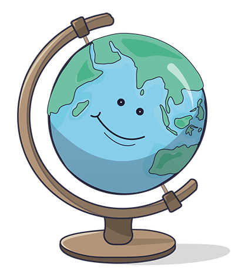
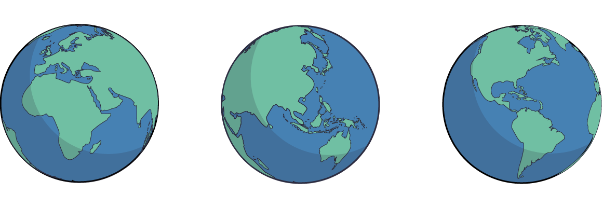

Der Globus
Halte die linke Maustaste gedrückt, um den Globus zu drehen. Außerdem kannst du mit der Maus rein- und rauszoomen.
Versuch doch mal auf deiner Erkundungstour Deutschland zu finden.
 |
Der GlobusEin Globus ist ein Modell der Erde in Form einer Kugel. Er hilft uns, die Welt besser zu verstehen, weil er Kontinente, Ozeane und Länder in ihrer richtigen Form und Lage zeigt. Anders als eine flache Karte verzerrt ein Globus die Größen und Entfernungen nicht so stark, weil er die runde Form der Erde nachbildet. Bei einem Globus sieht es so aus, als wäre die Erde „aufgespießt“. Das liegt an einer gedachten Linie, die sich vom Nord- zum Südpol zieht: die Erdachse. Der Globus ist jedoch nur ein Modell. Diese Linie gibt es nicht wirklich auf der Erde. Auch das Gerüst, auf dem der Globus befestigt ist, dient nur dazu, die Rotation der Erde nachzuahmen. Das Übertragen der dreidimensionalen Erde auf eine zweidimensionale Weltkarte nennt man Kartenprojektion. Da die Erde rund ist, kann es bei der Darstellung als flache Karte zu Verzerrungen kommen. Ist die Erde wirklich kugelrund? |
Eine Erde - verschiedene Perspektiven
Karten zeigen die Welt auf unterschiedliche Weise, da die runde Erde auf einer Karte flach dargestellt werden muss. Diese Kartenprojektionen zeigen immer nur einen bestimmten Blickwinkel auf die Welt.

Verschiedene Ansichten der Erde
Wahrscheinlich kennst du die Weltkarte, die Europa in der Mitte zeigt, denn die ist hier am geläufigsten. Manche Karten heben aber auch andere Teile der Welt hervor, was zu verschiedenen Ansichten führt.